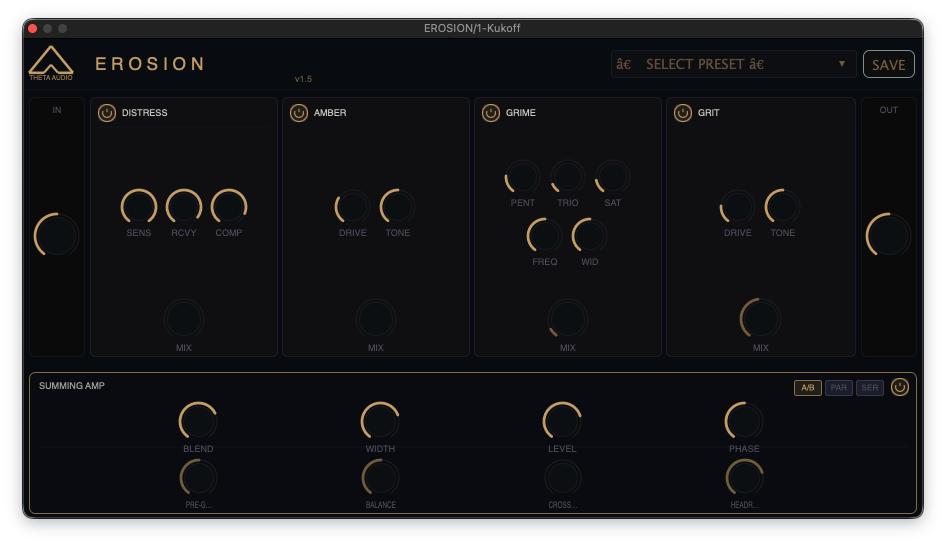

Non-linear frequency stripping calibrated for surgical audio destruction.
Digital artifacts introduced via variable-rate resampling protocols.
Resolution reduction mimics catastrophic AD/DA hardware failure.
Active signal monitoring for harmonic breakdown verification.